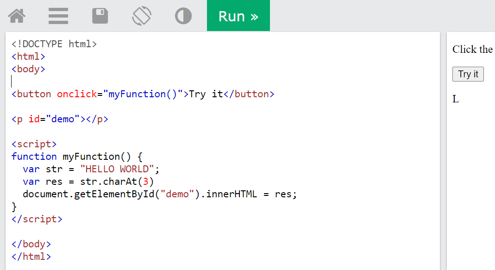

The charAt() method returns the character at the specified index in a string.
The index of the first character is 0, the second character is 1, and so on.
Tip: The index of the last character in a string is string.length-1, the second last character is string.length-2, and so on (See "More Examples").
